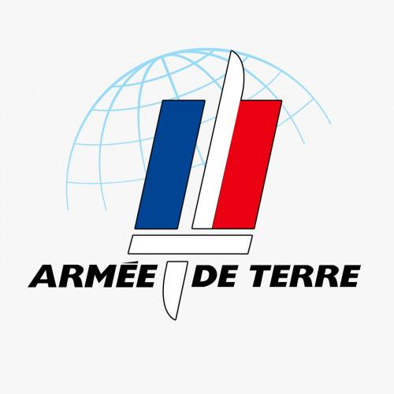
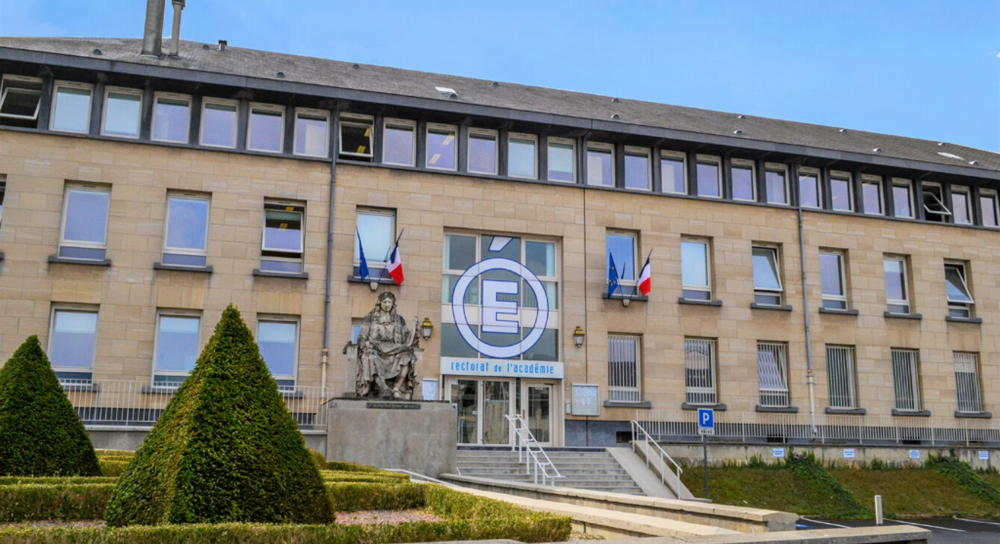

Engagé volontaire sous officier - Armée De Terre
De mi-mars à fin mars 2025
Engagé volontaire sous officier pour l'Armée de Terre française pour un poste de Spécialiste système d’information. Anciennement en formation à Saint-Maixant l'École.
Mastère cybersécurité - ESGI
D'octobre à fin novembre 2024
Entrée en formation au sein de l'École Supérieure de Génie Informatique dans le cadre d'un mastère spécialisé en cybersécurité. Campus de Reims.
Non diplômé, formation interrompue en cours d'année.
Licence informatique - Université de Reims Champagne-Ardenne
Titulaire depuis août 2024
Obtention de mon diplôme de licence après ma formation de septembre 2020 à août 2024 au sein de l'Université de Reims Champagne-Ardenne.

Stage de licence 3 en développement web - Rectorat de Reims
D'avril à juin 2024
Au sein du service de la DRANE, responsable de l'ENT de la région académique. Réalisation d'un MVP d'un catalogue de référencement d'applications web, mobile et de logiciels de bureautique. Noté en fonction de leur respect des normes RGPD.
Stage de licence 1 : Assistant du responsable numérique - Lycée Jean Jaurès de Reims
De mai à juin 2021
- Installation, configuration et maintenance de serveurs sous Windows.
- Gestion de l’infrastructure avec Hyper-V et Active Directory.
- Configuration d’un système de stockage en RAID 1.
- Installation et mise en service de postes informatiques dans les bureaux et salles de cours.
- Maintenance des ordinateurs portables (dispositif Lycée 4.0) et des équipements périphériques de l’établissement.
- Préparation et déploiement de l’infrastructure informatique pour la journée portes ouvertes.
Licence informatique - Université de Reims Champagne-Ardenne
Septembre 2020
Entrée en 1ère année de Licence informatique au sein de l'université de Reims Champagne-Ardenne.
Baccalauréat Sciences Économiques et Sociales - Lycée Jean Jaurès de Reims
De septembre 2017 à août 2020
Obtention de mon baccalauréat en août 2020, mention très bien, spécialité mathématiques.